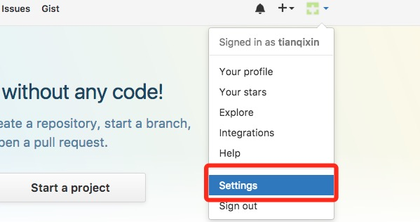
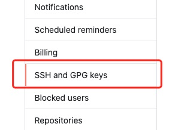
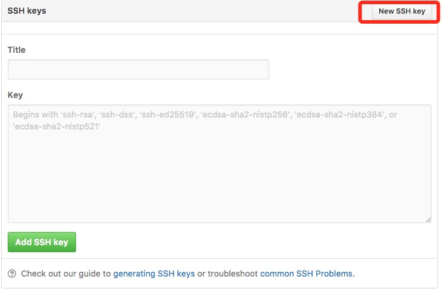
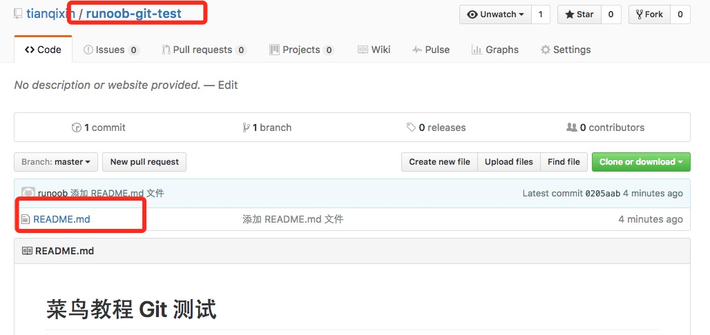
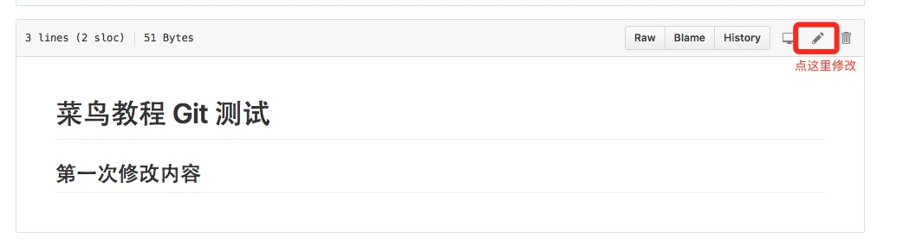

Git 远程仓库(Github)
Git 并不像 SVN 那样有个中心服务器。
目前我们使用到的 Git 命令都是在本地执行，如果你想通过 Git 分享你的代码或者与其他开发人员合作。 你就需要将数据放到一台其他开发人员能够连接的服务器上。
本例使用了 Github 作为远程仓库，你可以先阅读我们的Github 简明教程。

添加远程库
要添加一个新的远程仓库，可以指定一个简单的名字，以便将来引用,命令格式如下：
git remote add [shortname] [url]
本例以 Github 为例作为远程仓库，如果你没有 Github 可以在官网https://github.com/注册。
由于你的本地 Git 仓库和 GitHub 仓库之间的传输是通过SSH加密的，所以我们需要配置验证信息：
使用以下命令生成 SSH Key：
$ ssh-keygen -t rsa -C "youremail@example.com"
后面的your_email@youremail.com改为你在 Github 上注册的邮箱，之后会要求确认路径和输入密码，我们这使用默认的一路回车就行。
成功的话会在~/下生成.ssh文件夹，进去，打开id_rsa.pub，复制里面的key。
$ ssh-keygen -t rsa -C "12345678@qq.com" Generating public/private rsa key pair. Enter file in which to save the key (/Users/tianqixin/.ssh/id_rsa): Enter passphrase (empty for no passphrase): # 直接回车 Enter same passphrase again: # 直接回车 Your identification has been saved in /Users/tianqixin/.ssh/id_rsa. Your public key has been saved in /Users/tianqixin/.ssh/id_rsa.pub. The key fingerprint is: SHA256:MDKVidPTDXIQoJwoqUmI4LBAsg5XByBlrOEzkxrwARI 12345678@qq.com The key's randomart image is: +---[RSA 3072]----+ |E*+.+=**oo | |%Oo+oo=o. . | |%**.o.o. | |OO. o o | |+o+ S | |. | | | | | | | +----[SHA256]-----+
回到 github 上，进入 Account => Settings（账户配置）。

左边选择SSH and GPG keys，然后点击New SSH key按钮,title 设置标题，可以随便填，粘贴在你电脑上生成的 key。


添加成功后界面如下所示

为了验证是否成功，输入以下命令：
$ ssh -T git@github.com The authenticity of host 'github.com (52.74.223.119)' can't be established. RSA key fingerprint is SHA256:nThbg6kXUpJWGl7E1IGOCspRomTxdCARLviKw6E5SY8. Are you sure you want to continue connecting (yes/no/[fingerprint])? yes # 输入 yes Warning: Permanently added 'github.com,52.74.223.119' (RSA) to the list of known hosts. Hi tianqixin! You've successfully authenticated, but GitHub does not provide shell access. # 成功信息
以下命令说明我们已成功连上 Github。
之后登录后点击" New repository " 如下图所示：

之后在在Repository name 填入 runoob-git-test(远程仓库名) ，其他保持默认设置，点击"Create repository"按钮，就成功地创建了一个新的Git仓库：

创建成功后，显示如下信息：

以上信息告诉我们可以从这个仓库克隆出新的仓库，也可以把本地仓库的内容推送到GitHub仓库。
现在，我们根据 GitHub 的提示，在本地的仓库下运行命令：
$ mkdir runoob-git-test # 创建测试目录 $ cd runoob-git-test/ # 进入测试目录 $ echo "# 菜鸟教程 Git 测试" >> README.md # 创建 README.md 文件并写入内容 $ ls # 查看目录下的文件 README $ git init # 初始化 $ git add README.md # 添加文件 $ git commit -m "添加 README.md 文件" # 提交并备注信息 [master (root-commit) 0205aab] 添加 README.md 文件 1 file changed, 1 insertion(+) create mode 100644 README.md # 提交到 Github $ git remote add origin git@github.com:tianqixin/runoob-git-test.git $ git push -u origin master
以下命令请根据你在Github成功创建新仓库的地方复制，而不是根据我提供的命令，因为我们的Github用户名不一样，仓库名也不一样。
接下来我们返回 Github 创建的仓库，就可以看到文件已上传到 Github上：

查看当前的远程库
要查看当前配置有哪些远程仓库，可以用命令：
git remote
实例
$ git remote origin $ git remote -v origin git@github.com:tianqixin/runoob-git-test.git (fetch) origin git@github.com:tianqixin/runoob-git-test.git (push)
执行时加上 -v 参数，你还可以看到每个别名的实际链接地址。
提取远程仓库
Git 有两个命令用来提取远程仓库的更新。
1、从远程仓库下载新分支与数据：
git fetch
该命令执行完后需要执行 git merge 远程分支到你所在的分支。
2、从远端仓库提取数据并尝试合并到当前分支：
git merge
该命令就是在执行git fetch之后紧接着执行git merge远程分支到你所在的任意分支。

假设你配置好了一个远程仓库，并且你想要提取更新的数据，你可以首先执行git fetch [alias]告诉 Git 去获取它有你没有的数据，然后你可以执行git merge [alias]/[branch]以将服务器上的任何更新（假设有人这时候推送到服务器了）合并到你的当前分支。
接下来我们在 Github 上点击" README.md" 并在线修改它:

然后我们在本地更新修改。
$ git fetch origin remote: Counting objects: 3, done. remote: Compressing objects: 100% (2/2), done. remote: Total 3 (delta 0), reused 0 (delta 0), pack-reused 0 Unpacking objects: 100% (3/3), done. From github.com:tianqixin/runoob-git-test 0205aab..febd8ed master -> origin/master
以上信息"0205aab..febd8ed master -> origin/master" 说明 master 分支已被更新，我们可以使用以下命令将更新同步到本地：
$ git merge origin/master Updating 0205aab..febd8ed Fast-forward README.md | 1 + 1 file changed, 1 insertion(+)
查看 README.md 文件内容：
$ cat README.md # 菜鸟教程 Git 测试 ## 第一次修改内容
推送到远程仓库
推送你的新分支与数据到某个远端仓库命令:
git push [alias] [branch]
以上命令将你的 [branch] 分支推送成为 [alias] 远程仓库上的 [branch] 分支，实例如下。
$ touch runoob-test.txt # 添加文件 $ git add runoob-test.txt $ git commit -m "添加到远程" master 69e702d] 添加到远程 1 file changed, 0 insertions(+), 0 deletions(-) create mode 100644 runoob-test.txt $ git push origin master # 推送到 Github
重新回到我们的 Github 仓库，可以看到文件已经提交上来了：

删除远程仓库
删除远程仓库你可以使用命令：
git remote rm [别名]
实例
$ git remote -v origin git@github.com:tianqixin/runoob-git-test.git (fetch) origin git@github.com:tianqixin/runoob-git-test.git (push) # 添加仓库 origin2 $ git remote add origin2 git@github.com:tianqixin/runoob-git-test.git $ git remote -v origin git@github.com:tianqixin/runoob-git-test.git (fetch) origin git@github.com:tianqixin/runoob-git-test.git (push) origin2 git@github.com:tianqixin/runoob-git-test.git (fetch) origin2 git@github.com:tianqixin/runoob-git-test.git (push) # 删除仓库 origin2 $ git remote rm origin2 $ git remote -v origin git@github.com:tianqixin/runoob-git-test.git (fetch) origin git@github.com:tianqixin/runoob-git-test.git (push)<div style="display:none;"> <hr> <h2 id="git-coding">使用 CODING 仓库</h2> <blockquote><p>对于开发者而言 GitHub 已经不陌生了，在平时的开发中将代码托管到 GitHub 上十分方便。但是、国内用户通常会遇到一个问题就是： GitHub 的访问速度太慢。在阿里云和腾讯云的主机上 clone 代码时，如果主机的带宽不够大，clone 代码简直就是龟速。常常还会出现：丢包、失去连接等情况。对于这种情况，如果你想体验飞速的 Git 服务，不妨试着用一下 <a href='https://studio.dev.tencent.com/' target="_blank" rel="noopener noreferrer">腾讯云开发者平台</a>。相对于GitHub，CODING 除了提供免费的 Git 仓库之外，还给我们提供了免费的私有仓库（免费的普通会员提供 10 个私有项目、512M Git 仓库容量）。此外、CODING 还为我们免费提供了，项目管理、任务管理、团队管理、文件管理等功能，十分强大。</p></blockquote> <p>下面，我是试着来创建一个 CODING 项目，并且将 GitHub 上的代码迁移到 CODING。通常，分为三步：</p> <ul><li>1、创建 CODING 项目</li><li>2、将 GitHub 代码 Pull 到本地</li><li>3、本地关联 CODING 仓库，Push 代码到 CODING</li></ul><h3>创建 CODING 项目：</h3> <p>登录 <a href='https://studio.dev.tencent.com/' target="_blank" rel="noopener noreferrer">腾讯云开发者平台</a> 注册账号，然后在项目管理页面中创建项目，这一步不做赘述，按你的需要填写项目名称与描述，选择 License 类型即可，关于 License 的选择可以参考这篇文章：<a target="_blank" href='http://www.ruanyifeng.com/blog/2011/05/how_to_choose_free_software_licenses.html' rel="noopener noreferrer">如何选择开源许可证？</a>。项目创建完成中，在右侧菜单栏中的代码选项卡可以对代码进行相关的管理与操作</p><p> <img src='/images/ad/86879978.jpg.html' alt='' /></p><p> <img src='/images/ad/84518452.jpg.html' alt='' /></p> <h3>将 GitHub 代码 Pull 到本地：</h3> <p>登录 GitHub 选择你想要导入的仓库并复制仓库地址，在本地执行命令，将 GitHub 仓库代码拉下来：</p><p> <img src='/images/ad/10346579.jpg.html' alt='' /></p> <pre>sudo git clone</pre> <h3>本地关联 CODING 仓库，Push 代码到 CODING：</h3><p>首先我们执行命令：<code>git remote -v</code></p><p> <img src='/images/ad/43989293.jpg.html' alt='' /></p><p> 可以看到，当前的 git 已经关联了一个远程仓库。</p><p> 因此，接下来我们执行以下命令，来关联 CODING 远程仓库（后面的仓库地址需要替换为你的 CODING 项目的地址！） 第一条命令的作用是删除现有的仓库关联，后面两条命令则是将仓库关联到 CODING 的地址，并且将代码 Push 到 master 分支</p><pre> sudo git remote rm origin sudo git remote add origin https://git.coding.net/xxx/xxx.git sudo git push -u origin master</pre> <p>之后，我们再次进入 CODING 项目中代码管理的页面，便可以看到我们刚才 Push 上去的代码了。至此、GitHub 上的项目已经完整迁移到了 CODING 平台！</p><p> <img src='/images/ad/18357223.jpg.html' alt='' /></p> <h3>CODING 仓库的免密码 Push/Pull</h4><p>代码迁移到 CODING 之后，我们发现，每次 Push/Pull 代码的时候都会提示我们输入用户名和密码。这是因为，我们的项目还没有添加 SSH Key，只能通过用户名/密码验证。 而 CODING 是为我们提供了公钥验证的方式的，进入项目管理，在左侧选项卡中点击"公钥部署"按钮，然后点击右侧的"新建公钥部署"</p><p> <img src='/images/ad/62119861.jpg.html' alt='' /></p><p>我们将本地的公钥内容粘贴到对应位置，并且给公钥命名一下（查看/生成本机公钥，可以参考这篇博文：<a href='/w3cnote/view-ssh-public-key.html' target="_blank" rel="noopener noreferrer">查看本机 ssh 公钥，生成公钥</a>）。勾选"授予推送权限"则可以授予这台机器Push代码的权限。</p><p> <img src='/images/ad/64498917.jpg.html' alt='' /></p><p>保存好设置后，我们再次尝试。此时，Push/Pull 代码不在需要验证用户名密码。至此，我们的代码便完全托管在了 CODING 平台上，享受他的便捷与飞速吧！</p><p>如有疑问请查阅<a href='https://dev.tencent.com/help/doc/cloud-studio' target="_blank" rel="noopener noreferrer">帮助文档</a></p> <p>现在 CODING 正在举办一场基于 Cloud Studio 工作空间的【我最喜爱的 Cloud Studio 插件评选大赛】。进入活动官网：<a href="https://studio.qcloud.coding.net/campaign/favorite-plugins/index" rel="noopener noreferrer" target="_blank">https://studio.qcloud.coding.net/campaign/favorite-plugins/index</a>，了解更多活动信息。</p> </div> 其他扩展
leon
105***6491@qq.co
参考地址
git fetch origin master时，它的意思是从名为origin的远程上拉取名为master的分支到本地分支origin/master中。既然是拉取代码，当然需要同时指定远程名与分支名，所以分开写。git merge origin/master时，它的意思是合并名为origin/master的分支到当前所在分支。既然是分支的合并，当然就与远程名没有直接的关系，所以没有出现远程名。需要指定的是被合并的分支。git push origin master时，它的意思是推送本地的master分支到远程origin，涉及到远程以及分支，当然也得分开写了。git fetch origin master stable oldstable；git merge origin/master hotfix-2275 hotfix-2276 hotfix-2290；leon
105***6491@qq.co
参考地址
earhtnorth
ear***orth@163.com
ssh 访问 gitHub 出错如下：
解决办法：（将GitHub添加到信任主机列表后，可以成功访问）
earhtnorth
ear***orth@163.com